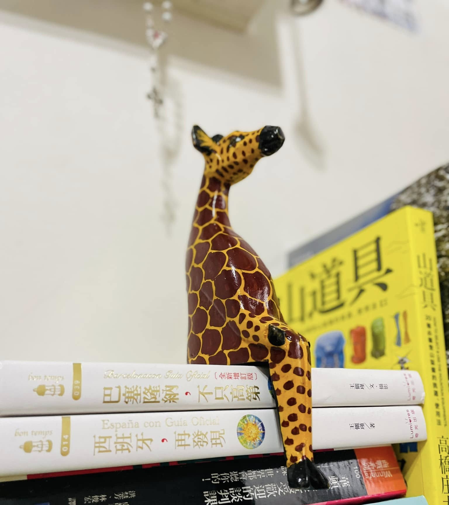
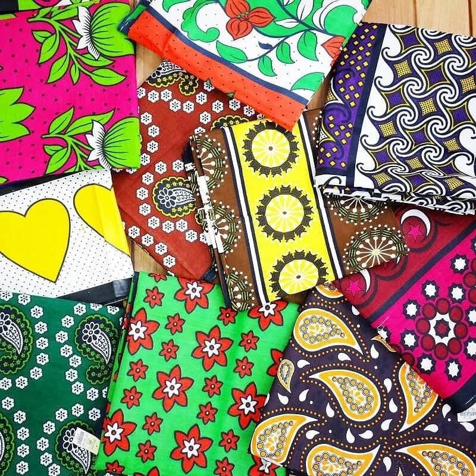

🎁 伴手禮精選

手工藝品 USD 15 – 120非洲木雕
African Wood Carving
以黑檀木（Ebony）或玫瑰木手工雕刻而成，題材涵蓋大象、長頸鹿、馬賽人剪影等東非代表意象。每件作品皆為工匠一刀一鑿完成，紋路與重量是鑑別真偽的關鍵——真正的黑檀木觸感沉甸且帶有天然油脂感，在手心輕敲會發出清脆聲響。
📍 推薦購買地點
奈洛比 Maasai Market — 每週六、日於 Yaya Centre 廣場舉辦，攤位密集、可議價
各野奢營地精品店 — 定價較高但品質有保障，且直接支持在地工匠
 珠寶飾品
USD 5 – 60
珠寶飾品
USD 5 – 60
馬賽串珠飾品
Maasai Beaded Jewelry
馬賽女性以細小玻璃珠（Seed Beads）手工串製而成，每種顏色各有文化意涵：紅色代表勇氣與力量、藍色象徵水與天空、白色象徵純潔。項圈式的「Enkiama」是最具代表性的款式，寬版平頸環色彩艷麗，是馬賽文化中最具視覺張力的工藝品之一。
📍 推薦購買地點
馬賽馬拉 Masai Mara 村落市集 — 直接向馬賽婦女購買，支持在地經濟
奈洛比 Village Market — 固定攤位，品質較穩定
阿魯沙市中心 Cultural Heritage Centre — 坦尚尼亞最具規模的工藝精品店
 食品飲品
USD 8 – 25
食品飲品
USD 8 – 25
東非精品咖啡
East African Specialty Coffee
肯亞的AA 等級咖啡豆以明亮的柑橘酸質與黑醋栗果香聞名，被國際精品咖啡協會列為全球頂級產區之一；坦尚尼亞的吉力馬札羅咖啡則以圓潤的口感與淡淡的葡萄酒香為特色，兩者皆採用水洗處理法，風味層次豐富。選購時注意包裝是否標示烘焙日期，越新鮮越好。超市常購品牌推薦JAVA、Dorman。
📍 推薦購買地點
奈洛比 Java House / Artcaffe — 本地知名連鎖咖啡廳，販售包裝豆
連鎖大型超市 — 如 Carrefour 家樂福、Nakumatt、Quickmart
肯亞紅茶/東非香料奶茶
tea/Masala Chai
肯亞紅茶以濃郁飽滿的茶感與柑橘、熟果甜香著稱，極適合單飲或調配鮮奶茶。推薦鎖定 Kericho Gold 的獨立包裝Enveloped茶包（適合台灣氣候）或 Melvins 的風味茶，例如香草紅茶Vanilla Tea或加綜合香料的Masala Tea(是肯亞日常生活最重要的飲料，混合了小荳蔻、薑、肉桂、黑胡椒等香料，只需熱牛奶沖泡即可。)。
📍 推薦購買地點
連鎖大型超市 — 如 Carrefour 家樂福、Nakumatt、Quickmart
奈洛比機場 — 免稅商店購買，但價格略高
 食品飲品
USD 0.5 – 3.5
食品飲品
USD 0.5 – 3.5
Chevda
Chevda
這是一道獨具東非風味的經典鹹甜零食，肯亞當地出產的馬鈴薯切片為主，混合扁米（Pressed rice）、扁豆、腰果與花生，經酥炸後拌入特製香料。不同於印度傳統重口味的辣味，肯亞版本帶著微甜、微酸（檸檬酸）以及濃郁的咖哩葉香氣，層次非常豐富。推薦原味、辣味、香辣檸檬 (Chilli Lemon)，如果注重健康也有無糖版 (No Sugar Added)的選擇。推薦品牌：Tropical Heat，也有不同容量包裝可選擇。
📍 推薦購買地點
連鎖大型超市 — 如 Carrefour 家樂福、Nakumatt、Quickmart
奈洛比機場 — 免稅商店購買，但價格略高
 食品飲品
USD 8 – 25
食品飲品
USD 8 – 25
非洲野生蜂蜜
Wild Acacia Honey
來自肯亞與坦尚尼亞草原上的金合歡（Acacia）野生蜂蜜，風味比一般蜂蜜更為複雜深沉，帶有輕微的花草與木質香氣，色澤深邃如琥珀。肯亞北部的原住民社區以傳統樹洞蜂箱採集，完全不加熱不過濾，保留了最完整的酵素與花粉。購買時選擇標示Raw / Unprocessed 的版本。肯亞知名品牌有Greenforest、Marigat Gold 和 Dorman's，坦尚尼亞有Jambo Asali、Upendo Honey 及 Swahili Honey。
📍 推薦購買地點
連鎖大型超市 — 如 Carrefour 家樂福、Nakumatt、Quickmart
奈洛比機場 — 有禮盒包裝款，方便攜帶上機
 天然保養
USD 8 – 40
天然保養
USD 8 – 40
非洲天然保養品
African Natural Skincare
包括乳木果油（Shea Butter）、猴麵包樹油（Baobab Oil）及瑪魯拉油（Marula Oil）。乳木果油以非洲婦女傳統手工提煉，保濕力極強，適合乾燥氣候後的肌膚修復；猴麵包樹油富含Omega 3-6-9 脂肪酸，是非洲本土最珍貴的植物油之一，對於滋潤肌膚、抗老修護與改善乾燥有極佳的保養效果。
📍 推薦購買地點
連鎖大型超市 — 如 Carrefour 家樂福、Nakumatt、Quickmart
各野奢營地精品店 — 多與在地婦女合作社合作生產

織品布料 USD 4 – 15坎加布 / 肯特布
Kanga / Kitenge Fabric
Kanga 是東非沿海女性最具代表性的印花棉布，通常成對販售，每幅邊緣印有一句斯瓦希里語諺語，可作圍裙、頭巾或包裹嬰兒使用。Kitenge 則是蠟染印花布，色彩更為濃郁大膽，常被裁製成服飾。兩者皆是東非文化認同的重要象徵，圖案豐富，可做桌布、包巾或壁掛裝飾。
📍 推薦購買地點
奈洛比 Toi Market — 最大的二手布料及新布市場，選擇極多
奈洛比 Maasai Market — 每週六、日於 Yaya Centre 廣場舉辦，攤位密集、可議價
 織品布料
USD 10 – 45
織品布料
USD 10 – 45
馬賽「Shúkà」羊毛毯
Maasai Shúkà Blanket
馬賽人傳統的格紋棉麻毯，又稱「非洲的 Plaid」。最經典的配色為紅藍格或紅黑格，寬幅設計方便披肩、鋪座或當毯子使用。現代改良版本採用較細膩的棉料織製，質感舒適適合作為家用裝飾。
真正高品質的 Shúkà 由蘇丹棉或印度棉以手工或傳統織機製成，觸感比中國代工版本更為厚實紮實。
📍 推薦購買地點
馬賽馬拉Masai Mara 村落市集 — 直接向馬賽婦女購買，品質最可靠
奈洛比 Village Market — 固定攤位，有多個品牌供比較
各野奢營地精品店 — 多與在地馬賽合作社合作進貨
 手工藝品
USD 20 – 200
手工藝品
USD 20 – 200
廷嘎廷嘎藝術畫
Tinga Tinga Art
廷嘎廷嘎（Tinga Tinga）是1960年代由坦尚尼亞藝術家 Edward Saidi Tingatinga 創立的獨特非洲繪畫風格，具有鮮豔的色彩搭配、魔幻的敘事方式、以動物為主題的歡樂畫風等特點，描繪野生動物與非洲日常生活，是坦尚尼亞最具代表性的原生繪畫藝術，如今已發展為整個東非的藝術代名詞，有大小不同尺寸，適合作為牆面裝飾的珍貴紀念品。
📍 推薦購買地點
奈洛比 Maasai Market — 每週六、日於 Yaya Centre 廣場舉辦，攤位密集、可議價
阿魯沙 Shanga Workshop — 附設身障藝術家工作室，可觀看現場創作
各野奢營地精品店 — 多與在地馬賽合作社合作進貨
 珠寶飾品
USD 30 – 500+
珠寶飾品
USD 30 – 500+
坦尚尼亞藍（丹泉石）
Tanzanite
丹泉石（Tanzanite）是全球唯一僅產於坦尚尼亞乞力馬札羅山麓的稀有寶石，色澤從深藍紫至藍色不等，在不同角度下呈現多色光學效果（多色性）。被 Tiffany & Co. 命名推廣後，聲名大噪。購買時務必索取坦尚尼亞礦業部認證書，並避免在路邊攤購買，以防假石。
📍 推薦購買地點
阿魯沙 Tanzanite Experience — 政府核可的官方展示與銷售中心
阿魯沙 Cultural Heritage Centre — 附設鑑定服務，提供正式收據
各大國際連鎖飯店精品店 — 售價偏高但真品保障最佳
💡 議價心法
在傳統市集（如 Maasai Market）議價是文化的一部分，通常開價的 40-60% 是合理成交點。先表示欣賞再詢問價格，購買多件可要求打包折扣。切勿過度殺價——記得當地工匠的薪資極低，公平交易是最好的旅行態度。
✈️ 攜帶注意
木雕、皮革製品需確認未使用瀕危物種材料（如象牙、犀牛角、烏龜殼）。咖啡豆與乾燥香料帶回台灣一般無虞，但液態蜂蜜須托運。丹泉石珠寶價值超過一定金額，建議在當地取得原產地認證書以利通關。
⚠️ 防偽提示
假丹泉石（通常以人造玻璃替代）在燈光下缺乏多色光學效果。假黑檀木重量極輕且無天然油脂感。路邊兜售的「馬賽珠寶」多為機器量產品。建議到有收據的固定商店購買，或直接向工匠購買可以觀察製作過程的商品。